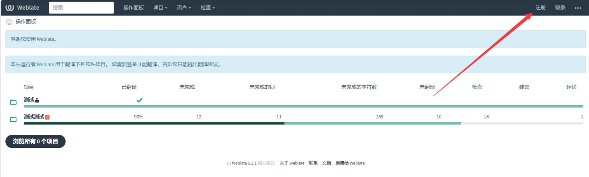

⭐新注册成员请使用github注册，不要使用邮箱⭐
weblate简易教程（作者：502y）
注册
点击私有weblate网址，即可打开网站主页，点击右上角的注册即可注册账号。
注册账号会自动跳转至GitHub进行授权，点击右下角绿色按钮即可授权注册，请确保能够正常访问GitHub。
设置
个人设置，将鼠标放置在右上角头像处即可看到个人设置选项，点击Settings即可打开
如果你想要修改昵称或者不想暴露您的邮箱，可以前往账户分栏进行设置
同一分栏的下部可以修改密码或关联的邮箱、Github，不再赘述。
翻译
注册并登录后即可选择项目进行翻译，点击打开项目，这里使用测试项目作为样例。
点击你要翻译的语言打开，一般来说英语是原文，原文位于语言列表的第一行，这里以日语为例。
进入选择的语言后即可看到如下页面.
现在就可以点击三色箭头对应的按钮进行翻译了，下文会详细介绍三种入口的异同及禅模式的特色。注意，界面下方的其他部件表示这些是同一项目的不同部分，不属于选定的翻译文本范畴。
红色即为快速打开翻译界面，默认为为翻译词条，与紫色的“未完成字符串”效果相同；紫色部分为四种快速筛选器，所有字符串顾名思义，未完成的字符串意为未提交并保存译文的字符串，未翻译字符串意为未输入过或已删除译文的字符串，无建议的未完成字符串意为未完成的字符串基础上，且未保存过建议的字符串；青色部分为快速打开四种筛选的禅模式翻译。下图为常规翻译界面详解：
下图为禅模式界面介绍：